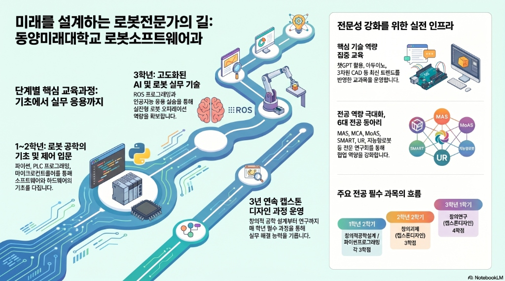
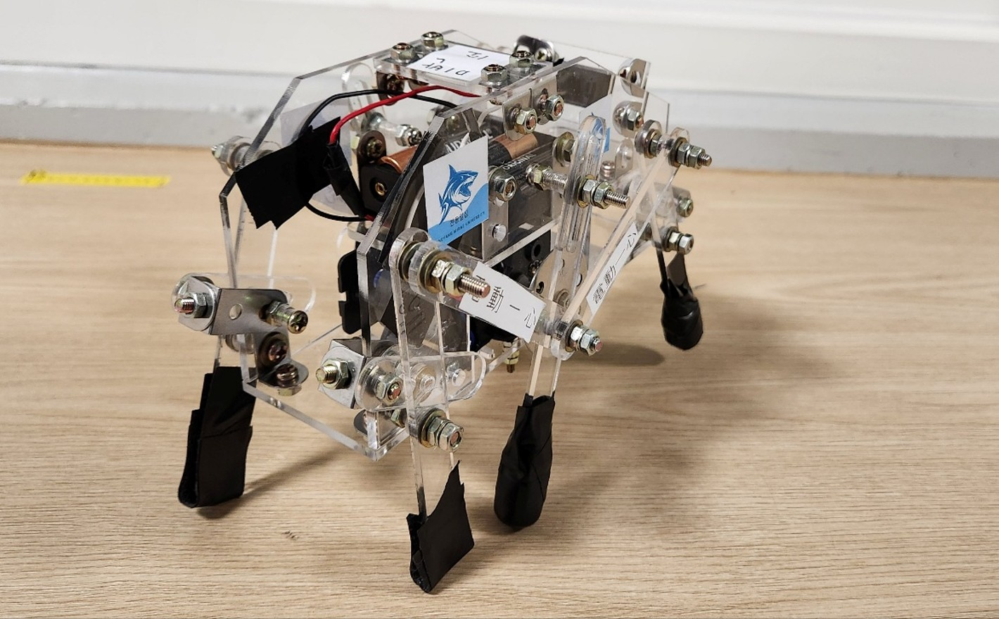

준비된 반도체 설비 전문가,
기술 초격차를 주도하다
로봇소프트웨어과의 하드웨어 제어 역량과 반도체 부트캠프의 공정 지식을 결합하여, SK하이닉스 유지보수(Maintenance) 직무에 즉시 투입 가능한 실무형 인재로 성장했습니다.
MISSION & VALUE:
SK하이닉스의 미래를 설계하는 패기
SK하이닉스의 VWBE와 SUPEX 정신을 기술 현장에서 실천하며,
장비 다운타임 제로화를 향해 집요하게 도전하는 메인터넌스 엔지니어 지망생 신광철입니다.
VWBE: 지능형 기술 혁신
단순한 융합을 넘어 로봇 지능과 반도체 공정을 완벽히 동기화하여 **기술의 임계점**을 돌파하는 창의적 두뇌 활용의 정수를 보여줍니다.
SUPEX: 한계를 넘는 초격차 도전
사고율 0%를 향한 무결점의 집념과 주행 안정성 96%를 상회하는 **압도적 정밀도(Super Excellent)**로 반도체 공정의 기술적 한계를 정복하고 새로운 표준을 제시합니다.
패기: 불가능을 뚫는 압도적 집념
어떠한 극한의 다운타임 위기에서도 한계를 두지 않는 과감한 실행력으로 설비 가동률 100%를 향해 전진하는 강력한 에너지를 보유하고 있습니다.
성장 로드맵:
로봇 전문가를 향한 여정

융합 과정:
반도체 & 로봇 S/W 융합
동양미래대학교의 특화된 마이크로디그리 과정과 로봇 SW 전공 커리큘럼을 교차 이수하며 장비 제어의 본질을 꿰뚫는 시각을 갖추었습니다.
장비 제어 S/W 성과
예방 보전 알고리즘
장비 로그 기반 이상 탐지 모델 구현
Safety Interlock 설계
PLC 기반 설비 가동 안전 무결성 확보
PC 기반 고정밀 제어
비전 센서 융합 및 HMI 모니터링
반도체 부트캠프
반도체 소자 및 공정 기초
Wafer 제조부터 패키징까지 8대 공정의 이론적 기반 완벽 이해
반도체 설비 유지보수 실무
Troubleshooting 방법론 및 장비 등가회로 시뮬레이션 분석
반도체 장비 S/W 운용
실제 Data Log를 바탕으로 한 수명 예측 및 예방 보전 고도화
프로젝트 쇼케이스:
13 Balance (2학년 창의과제 도전)
[Ongoing Project] 1학년 '창의적 공학 설계' 과정에서 검증한 기구 제작 노하우를 바탕으로, 현재 제어 기술(PID)을 결합한 '자율주행 웨이퍼 이송 로봇(13 Balance)'을 직접 설계 및 제작 중입니다.
기존의 기계적 구동을 넘어, 외부 노이즈에도 수평을 유지하는 정밀 제어와 최적의 택트 타임(Tact Time)을 목표로 개발 과정을 밟아나가고 있습니다.

실물 구현: 6족 보행로봇
테오얀센 메커니즘을 실제 하드웨어로 구현한 6족 보행 로봇입니다. 1학년 과정에서 배운 SolidWorks 모델링 데이터를 바탕으로 아크릴을 정밀 가공하고, 전동 메커니즘을 조립하여 안정적인 보행 성능을 검증했습니다.
Troubleshooting Experience
[문제점] 실물 제작 중 모터 토크 부족으로 인한 보행 불안정 발생
[해결책] 기어비 재설계를 통한 회전수 감소 및 토크 증대로 **보행 안정성 100%** 확보

13 Balance: 자율주행 웨이퍼 이송 시스템
Arduino Mega 2560 기반의 3단 수직 구조 웨이퍼 이송 로봇입니다. 팹(Fab) 내 좁은 통로와 장애물을 회피하며 웨이퍼를 안전하게 운송하는 Line Tracing 기술을 구현했습니다.
Technical KPI
[해결] **PID 제어 알고리즘** 최적화를 통해 고층 구조의 관성 진동 문제를 극복했습니다. 현재 실시간 모니터링 시스템을 연동하여 가동 데이터 기반의 **안정적 주행 제어**를 구현하고 있습니다.
자격 및 역량:
산학 협력 및 글로벌 역량
산학 협력 및 기술 연계 역량
두산로보틱스
[AMHS 무인화] **로봇기구학** 및 **3차원 CAD** 전공 역량을 기반으로 협동로봇(Cobot)을 활용한 클린룸 내 자동물류이송 및 보수 보조 실습 수행. 하드웨어 메커니즘 분석을 통한 설비 가동률 최적화 기여.
한국미쓰비시전기
[설비 통합 제어] **PLC 프로그래밍** 및 **자동화통신** 교과를 통해 습득한 지식을 바탕으로 **e-F@ctory** 환경에서의 데이터 수집 및 실시간 모니터링 HMI 설계 역량 확보.
나인플러스 IT
[HBM 패키징 설계] **전자회로** 및 **반도체공정기초** 지식을 EDA(Cadence) 실무에 접목하여 SK하이닉스 **HBM** 패키징 공정에 필수적인 고속 신호 분석 및 레이아웃 설계 역량 증명.
자격증 및 배지
커리어 서사:
SK하이닉스와의 궤적
VWBE와 SUPEX 정신으로 라인의 다운타임을 제로화하겠습니다
동양미래대학교에서의 심도 있는 현장 실습과 반도체 부트캠프를 통해 '장비의 일시적 정지가 곧 글로벌 경쟁력의 손실'이라는 현장의 무게감을 배웠습니다.
저는 단순히 고장 난 장비를 수리하는 것을 넘어, 데이터 기반의 '예방 보전'을 통해 잠재적 결함을 사전에 차단하겠습니다. SK하이닉스의 M15/M16 라인에서 "확실하게 믿고 맡길 수 있는" 전문성을 증명하겠습니다.